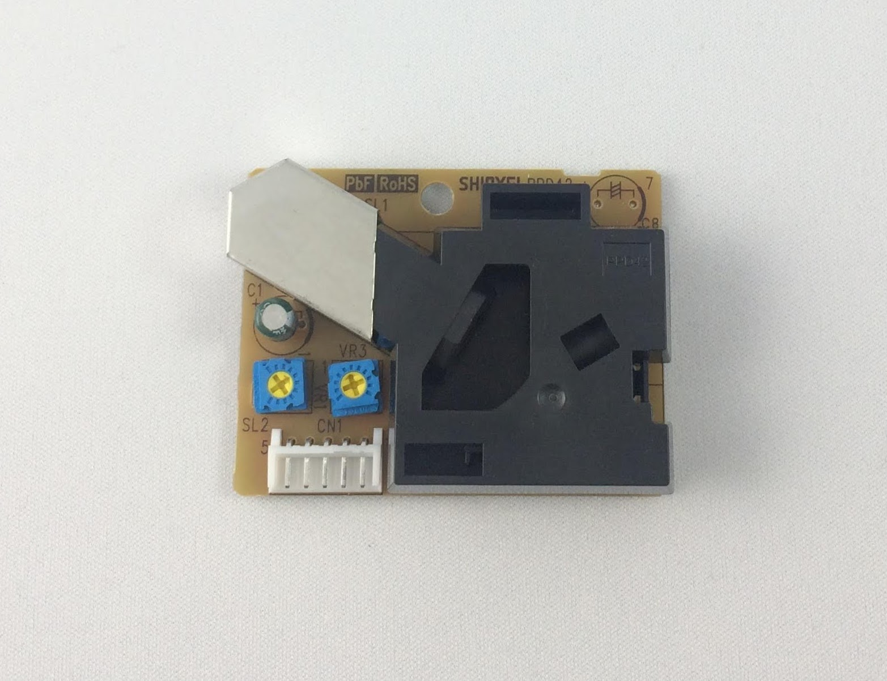
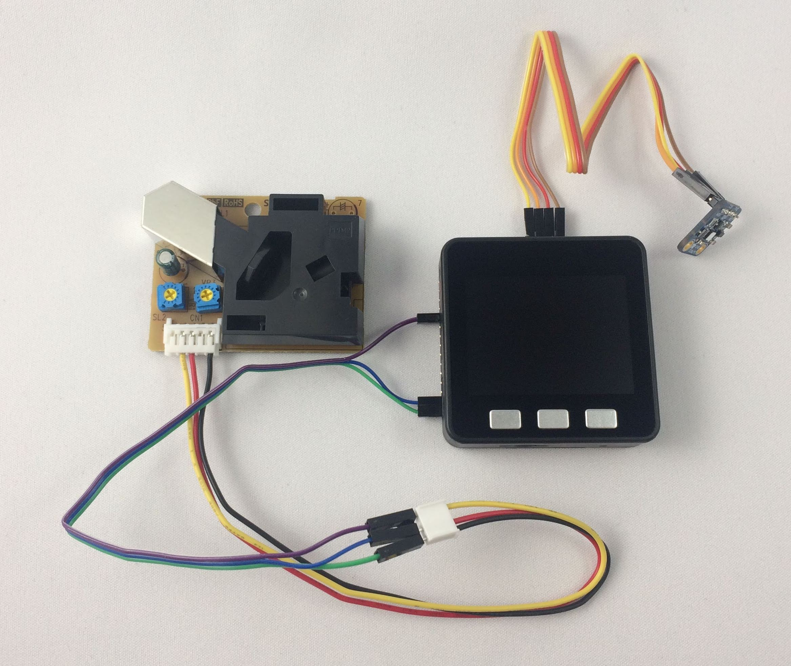
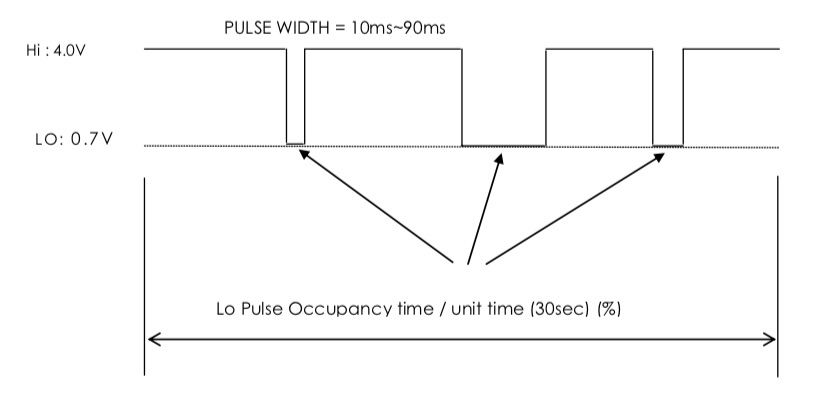
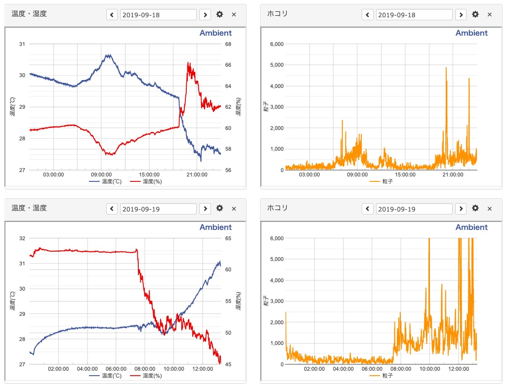

M5StackとGrove ダストセンサを使い、空気中のホコリの量を測定します。
今回使用するGrove ダストセンサは、直径1マイクロメートル（μm）以上の粒子を検出し、粒子状物質の濃度に対応したパルスを発生します。

ちなみに、大気汚染で注目されているPM2.5は2.5μmの粒子状物質、スギ花粉症の原因となるスギ花粉は30〜40μmの大きさとのことなので、このGrove ダストセンサはPM2.5が検出可能なようです。
Grove ダストセンサには4ピンのGroveコネクタがついていて、各ピンはデジタル出力、未使用、5V、グランドです。
M5Stack BasicやGrayにはGroveポートがありますが、I2C接続用です。M5Stack内部でIP5306というI2Cで通信する電源制御用チップにもつながっているので、I2C以外の方法で使えません。つまり、GroveダストセンサのGroveコネクタはM5Stack BasicやGrayのGroveポートには挿せません。そこでGroveダストセンサをM5StackのGPIO2、5V、GNDに接続しました。
| Groveダストセンサ | M5Stack |
|---|---|
| デジタル出力 | GPIO2 |
| 未使用 | ー |
| 5V | 5V |
| グランド | GND |
空気中のホコリの量と合わせて温度と湿度も測るように、温湿度センサSi7021も接続しました。

Grove ダストセンサは、測定時間中にパルスがLowレベルになった時間の比率が、粒子状物質の濃度に対応します。

Grove ダストセンサにアクセスしてホコリの粒子量を得るプログラムは、Seeed studui 社のサイトのサンプルコードを使いました。
pulseInはパルス幅を測るArduinoのシステム関数です。
pulseIn(pin, value[, timeout]);
pinで指定するピンがHIGHまたはLOWである時間を測り、結果をマイクロ秒で返します。timeoutを指定した場合、timeout μ秒経過すると0が返ります。
pulseIn関数でパルスがLowである時間を測り、lowpulseoccupancyという変数にに積算していき、sampletime_ms秒経ったら比率（ratio）を計算します。
次の式で比率（ratio）から粒子の濃度（concentration）を計算しています。
concentration = 1.1 * ratio ^3 - 3.8 * ratio ^2 + 520 * ratio + 0.62
60秒ごとにホコリの粒子量と温度、湿度を測定し、クラウドサービスAmbientに送信してデータを可視化するプログラムの全体は次のようになりました。
ダストセンサを自宅の居間において、何日か測定しました。

左のグラフは青が温度、赤が湿度、右のグラフはオレンジがホコリの量で、単位は0.01立方フィートあたりのホコリの粒子量です。
9月18日は旅行にでていて、朝から不在で、18時40分ごろ帰宅して、部屋の空気を入れ替えました。そのタイミングで温度が下がり、相対湿度が上がっています。粒子量も少し増えています。20時ぐらいに夕食だったので、そのときに粒子量が増えています。
不思議なのは6時過ぎから10時ぐらいまでと12時ぐらいの粒子量の増加です。この時間は家には誰もいないのですが、粒子量が増えています。温度上昇と似た増え方をしているので、何か相関があるのかもしれません。
翌19日は7時ごろ起床しました。就寝中は粒子量が少なく、人が活動を始めると粒子量が増加しています。
ホコリの量は精密な作業をおこなう工場などでは重要な指標です。Grove ダストセンサは原稿執筆時点で1,987円と比較的安価です。ホコリの量と作業品質の相関を調べるならこういったセンサで十分意味のあるデータが取れそうです。